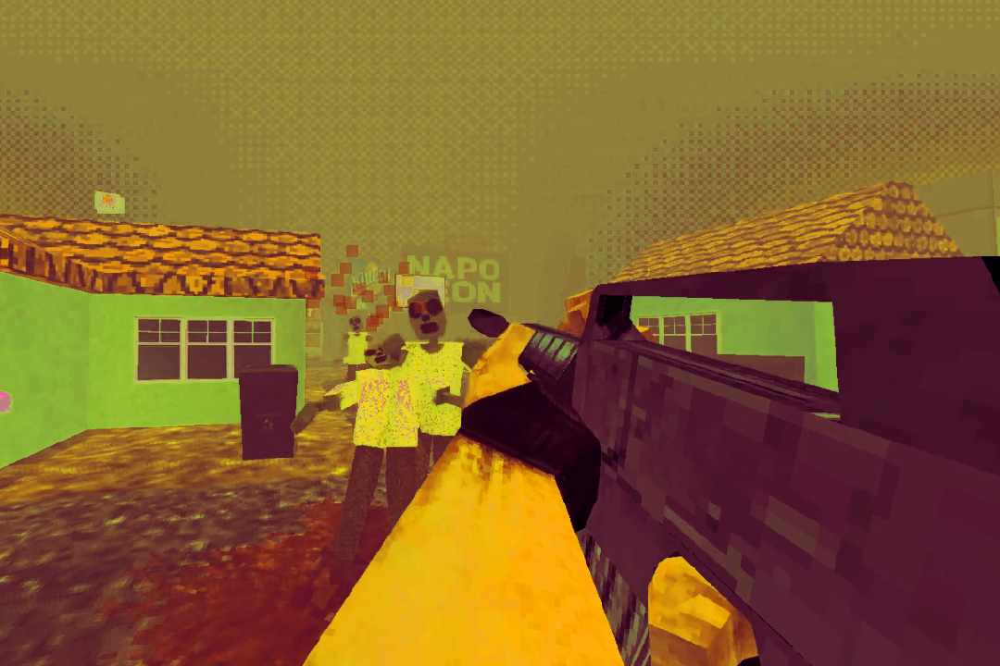
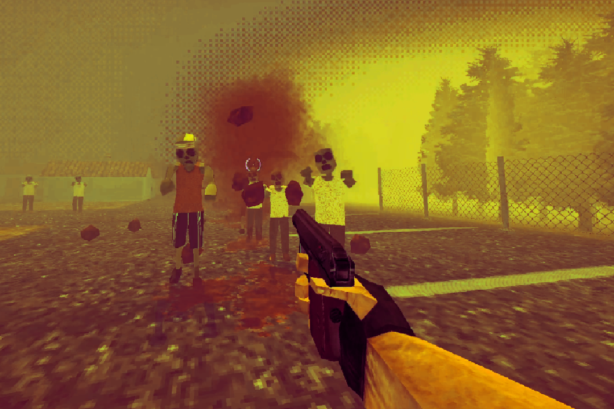
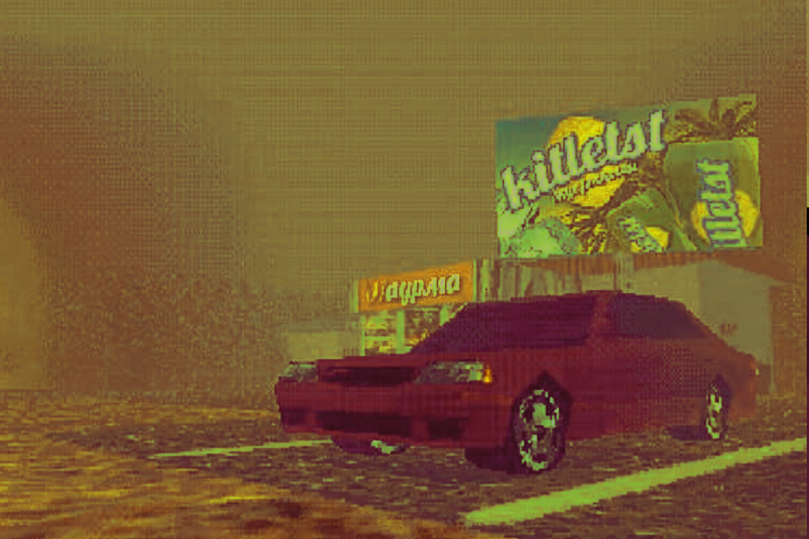

OKNO - это сообщество разработчиков и игроков,
во главе с oknogmdv - автором ютуб-канала OKNO, Telegram-канала и др.
Каждый участник сообщества участвует во все возможных активностях, а многие и сами производят контент.
Сейчас главной темой всего нашего контента является Deadays - динамичный ретро-зомби-шутер от первого лица.
sociallly
pr0jetz
DEADAYS



Deadays - это динамичный зомби-шутер в ретро-стилистике, в котором
вам предстоит отбиваться от орд разнообразных зомби, улучшать свое
оружие и персонажа, ставить новые рекорды и пробовать уникальные
сочетания перков
Deadays - open-source проект, распространяющийся по лицензии MIT.
Кто-угодно может скачать файлы проекта и делать с ними все, что угодно. В
связи с этим выходит множество модификации на игру, лучшие из которых
мы добавляем в лаунчер игры на отдельную страницу.
donations donations donations
донаты пойдут на:
нужды проектов (сервера и др);
призовые фонды конкурсов и геймджемов;
оплату работы фрилансеров;